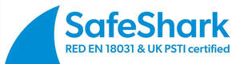
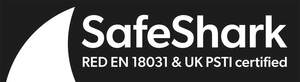

Trade Mark Journal No.2025/032 8 August 2025
UK00004139170 19 December 2024 (6,7,9,10,11,12,18,19,20,21,24,28)
Certification Mark
Mark 1

Mark 2
Mark 3

- Class 6
- Smart House Pergola; Smart greenhouse; Smart pet doors of metal; Smart metal blinds and curtains.
- Class 7
- Smart washing machines; Robotic vacuum cleaners; Robot Vacuums; Robot Cleaner; Smart lawn mower; Connected machinery for factories or agriculture; Smart dishwashers; connected industrial machinery; connected industrial robots.
- Class 9
- Mobile phones; smart tablets; Smart speakers; Smart thermostats; Smart lighting systems; Smart doorbells and cameras; Smart locks and access control systems; Home security systems with wireless or internet control; Home automation including Doorbell, CCTV, Door Entry, Smart Speaker, Smart Art Frame, Smart Power Strip; Smartwatches; Fitness trackers; Smart glasses; Wi-Fi routers and modems; Wireless access points; Networked storage devices; Smart hub; Wi-Fi Extender/Socket; Smart home hubs; Smart sensors; Connected health devices; smart locks; smart heating; Fire Alarm Hub; smart plugs; smart TV's; Streaming devices; Wireless headphones and speakers; Digital Signage, Home Cinema, TV, Live Streaming, Sound bar, DVD player, Projector, DJ; In-car entertainment systems with internet or wireless connectivity; Smart car trackers; Dash Camera, Car Audio, Sat Nav; Campervan solar; Connected medical devices; Wearable health monitors and Breast Pumps, Health Monitors, Baby Monitors; Laptops and desktops with wireless or Bluetooth communication; External devices like wireless mice, keyboards, and printers; Energy meters with wireless or cellular communication capabilities; Industrial sensors and controllers with wireless communication; Wireless alarm systems; Remote-control systems for heating, lighting, or access; Remote monitor; Wi-Fi hotspots; Public information systems that rely on wireless technology; Smart smoke detectors; Smart carbon monoxide detectors; Smart pet cameras; Connected electric vehicle (EV) chargers; Smart tyre pressure monitoring systems; Smart augmented reality (AR) and virtual reality (VR) headsets; Smart meters; connected traffic management systems.
- Class 10
- Connected health devices; Connected medical devices; Wearable health monitors and Breast Pumps, Health Monitors, Baby Monitors; Connected insulin pumps; Smart inhalers.
- Class 11
- Smart lighting systems; smart bulbs; Smart Fridge; Smart BBQ; Smart watering system; Smart dryers; Smart ovens and kitchen appliances; Smart refrigerators and freezers; Smart showers and baths; smart lights; smart radiator; smart heating; smart showers; Car fridge; Remote-control systems for heating, lighting, or access; Smart street lighting; Smart irrigation systems for gardens; Smart Air Purifiers.
- Class 12
- Wireless car diagnostic tools; Car diagnostics; Drones with wireless communication.
- Class 18
- Smart Umbrella; Smart luggage with GPS tracking.
- Class 19
- Smart greenhouse; Smart House Pergola; smart pet doors not of metal.
- Class 20
- Smart Mirror; Smart photo frame; Smart mirrors with integrated virtual assistant; smart bamboo curtains; smart blinds.
- Class 21
- Smart Pet; smart pet feeders.
- Class 24
- Smart curtains; smart curtains of plastic; smart lace curtains; smart fabric curtains.
- Class 28
- Gaming consoles; Smart toys with internet or Bluetooth connectivity.
SafeShark Limited
Representative: Fieldfisher LLP
The Regulations provisionally accepted by the Registrar for governing the use of this Certification trade mark are open to inspection at the Trade Marks Registry, from where copies may be obtained. If no opposition arises the Registrar will approve the Regulations and the mark will proceed to registration.